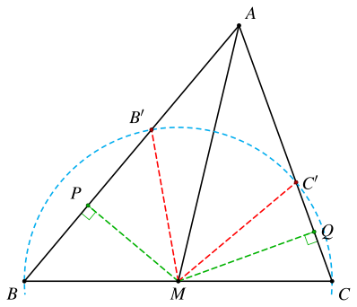
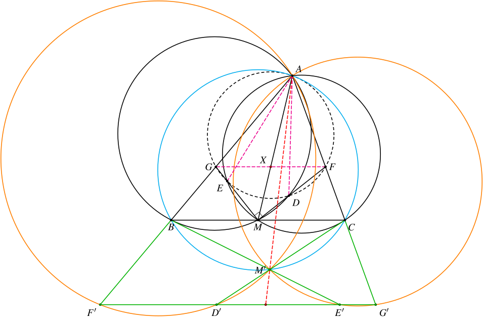

1. 题目
如图，在锐角 △ABC 中，M 是 BC 的中点，D、E 为 △ABC 内两点，满足 D 在 △ABM的外接圆上，E 在 △ACM 的外接圆上，且 MD⊥ME。延长 MD、ME 分别交 AC、AB 于 F、G。已知 D、E、G、F 共圆，求证：MD 平分 ∠AMC。
2. 分析
这个题最直接的做法就是用三角来算，思路简单，但是计算稍微有些麻烦。
如果使用几何法，关键是证明点 A 也和 DEGF 共圆。
可以考虑对点 A 进行反演。
3. 解答一（三角法）
我们设 ∠AMF=α，∠CMF=β，只需证 α=β 即可。
由 DEGF 共圆可知：
MD⋅MF=ME⋅MG
我们可以利用正弦定理求出这四条边的长度：
sin∠DBMMD=sinBAM,sin∠ECMME=sinCAM,sinCMF=sin∠MFCMCsinBMG=sin∠MGBMB
代入前面的等式，可得
sinBAM⋅sin∠DBM⋅sin∠MFCMC⋅sinC=sinCAM⋅sin∠ECM⋅sin∠MGBMB⋅sinB
化简得
sin∠DBM⋅sin∠MGB⋅sin2C=sin∠ECM⋅sin∠MFC⋅sin2B
其中
∠DBM∠MGB∠ECM∠MFC=∠B−α=π−(2π−β)−∠B=2π−(∠B−β)=∠C−(2π−α)=(∠C+α)−2π=π−β−∠C=π−(∠C+β)
代入可得
sin(B−α)⋅cos(B−β)⋅sin2C=−cos(C+α)⋅sin(C+β)⋅sin2B
利用积化和差公式进行变形：
[sin(2B−α−β)+sin(β−α)]⋅sin2C=−[sin(2C+α+β)−sin(α−β)]⋅sin2B
注意到 α+β=∠AMC，可得
sin(2B−∠AMC)⋅sin2C+sin(2C+∠AMC)⋅sin2B=sin(α−β)[sin2B+sin2C]
显然，只需证明等式左边为零即可。
注意到此时等式左边已经没有 α 和 β 了，它只和中线 AM 有关。
到此，我们基本上可以判定，这道题能够证出来了。
LHS=0 的证明
注意到
2∠B−∠AMC2∠C+∠AMC=∠B−(∠AMC−∠B)=∠B−∠BAM=∠C+(∠AMC+∠C)=∠C+(π−∠CAM)=∠C−∠CAM+π
因此 LHS=0 等价于
sin(∠B−∠BAM)⋅sin2C=sin(∠C−∠CAM)⋅sin2B
即
sin2Bsin(∠B−∠BAM)=sin2Csin(∠C−∠CAM)
又因为
sin∠BAMsinB=BMAM=CMAM=sin∠CAMsinC
因此只需证
sinBsin∠BAMsin(∠B−∠BAM)=sinCsin∠CAMsin(∠C−∠CAM)
将分子展开
sinBsin∠BAMsinBcos∠BAM−cosBsin∠BAM=sinCsin∠CAMsinCcos∠CAM−cosCsin∠CAM
即
cot∠BAM−cotB=cot∠CAM−cotC

我们过 M 分别向 AB、AC 作垂线，垂足依次为 P、Q。作 B 关于 MP 的对称点 B′，C 关于 MQ 的对称点 C′。
则上面的等式等价于
⟺⟺⟺MPAP−MPBP=MQAQ−MQCQAQ−CQAP−BP=MQMPAC′AB′=ABACAB⋅AB′=AC⋅AC′
由 MB′=MB=MC=MC′ 可知 B、B′、C′、C 四点共圆，因此上面的等式成立。
4. 解答二（反演）
对点 A 作 bc 反演，记点 P 的对应点为 P′。

由
∡AF′D′=∡AM′D′=∡ADM=∡ABM
可知 D′F′∥BC。
同理，由
∡AG′E′=∡AM′E′=∡AEM=∡ACM
可知 E′G′∥BC。
另外，由反演可知，AM′D′F′、AM′E′G′、D′E′G′F′ 共圆，它们两两的根轴 AM′、D′F′、E′G′ 平行或交于一点。
假设 AM′∥D′F′，则 AM′∥BC，这显然不成立，因为 A 和 M′ 在 BC 的两侧。
因此三条根轴交于一点，可知 D′F′ 和 E′G′ 重合，即 D′E′G′F′ 共线。
由 ∡AF′G′=∡AGF 可知 F′G′∥FG，因此 FG∥BC。
设 FG 与 AM 交于点 X，由 M 是 BC 的中点，可知 X 是 FG 的中点，因此 MX=XF。于是有
∠AMF=∠GFM=∠FMC